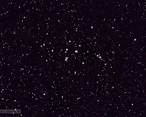
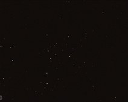

M3
Messier 3 - a 6.4 magnitude globular cluster in the constellation Canes Venatici. Taken with the Canon T5i on the 80 mm apochromatic refractor.
M5
Globular cluster M5 showing full frame.
Atik 383L CCD, R-filter, through the 80mm Meade apochromatic refractor.
Atik 383L CCD, R-filter, through the 80mm Meade apochromatic refractor.
M5
M5, globular cluster in Serpens. The red color pallette is for fun and does not give accurate colors, although the stars in globular clusters are truly old…
Messier 13 - globular cluster.
Messier 13, a globular cluster in the keystone of Hercules. One of the brightest of the globular clusters that orbit our Galaxy. Taken with R, G, and B…
Messier 38
Messier 38, aka the Starfish Cluster, is an open cluster in Auriga. The small concentration of stars at the bottom is probably NGC 1907.
M44 - the Praesepe
M44, the Praesepe star cluster in Cancer. A very nearby cluster (600 LY) requiring a wide field of view to capture. This was taken with the Canon T5i on the…

M44 - Praesepe
M44, also known as the Praesepe or the Beehive Cluster, located in Cancer.
Taken with an Atik 343L CCD and an 80mm Meade apochromatic refractor.
Taken with an Atik 343L CCD and an 80mm Meade apochromatic refractor.
M45- The Pleiades
M45, also known as the Pleiades or the Seven Sisters, is one of the nearest open clusters to Earth. Composed of a grouping of hot young blue stars and their…

M45 the Pleiades star cluster.
M45 the Pleiades star cluster in Taurus. Rotated so that North is up. The blue reflection nebula is barely visible, especially below the bright star just below…
M45- The Pleiades
M45, the Pleiades star cluster in Taurus. Also known as the Seven Sisters because about seven of the stars are visible to most people's unaided eye. This is a…
M67 star cluster
M67 is one of the oldest known open star clusters. Most open clusters are much less than 1 billion years old, but this one is about 3-5 billion years old. It…
M67 - old star cluster.
Messier 67, an open star cluster in the constellation Cancer. It's age is estimated to be 4 billion years whereas most open clusters are much less than 1…
M103 in Cassiopeia
Messier 103, an open cluster in Cassiopeia.
Slightly out of focus image taken with the Atik CCD on the Celestron C11. N is up.
Slightly out of focus image taken with the Atik CCD on the Celestron C11. N is up.
Double Cluster in Perseus
The Double Cluster (NGC 884 and 869) in Perseus. These open clusters are visible to the naked eye (under good sky conditions) just above the peak of the head…
Double Cluster in Perseus.
The Double Cluster (NGC 884 and 869) in Perseus. These open clusters are visible to the naked eye (under good sky conditions) just above the peak of the head…
Double Cluster in Perseus.
The Double Cluster, or NGC 869 and NGC 844, are a pair of open clusters in the constellation Perseus.
DSI II CCD, Meade 80mm apochromatic refractor. N is up.
DSI II CCD, Meade 80mm apochromatic refractor. N is up.
NGC 884
NGC 884, eastern half of the Double Cluster in Perseus. N is up.
DSI II CCD, Meade 80mm apochromatic refractor.
DSI II CCD, Meade 80mm apochromatic refractor.
NGC 1502 - young cluster
NGC 1502 is special in that it is a very young cluster with an age of about 5 million years. It contains only about 60 stars. Canon T5i on the 80mm apo.

NGC 2395
NGC 2395 - a star cluster in Gemini. Taken with the SVbony 305 guide camera.

{kind=link}
{kind=link}
{kind=link}
{kind=link}
{kind=link}
{kind=link}
{kind=link}
{kind=link}
{kind=link}
{kind=link}
{kind=link}
{kind=link}
{kind=link}
{kind=link}
{kind=link}
{kind=link}
{kind=link}
{kind=link}
{kind=link}